村長是位，有趣且不嚴肅的人，大家可稱他為<陽光型男村長>，他是我看過最負責任的一位村長，從他的臉我就能看得出來他為下犁付出了多少心血，心理、腦裡，想的都是該如何把這個村整頓得更好，也許他心裡堅持著{我們要的不是只有好而是更好}。至於村長夫人呢，則是位賢妻良母，更是陽光型男的的好助手。
我要開始介紹了唷!!
陽光型男他的叫{黃耀燻}，他哩不只有村長一個角色而已喔!!
來我詳細的訴說給你聽!!準備好了嗎??
陽光型男他的第一個角色就是(大自然公司的老闆)
你看那是他們大多在做的塑膠範例
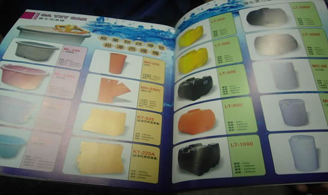
想了解更多就來這唄!!
你看我們多認真阿!!
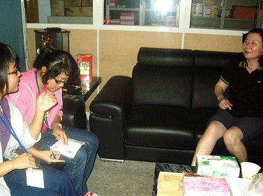 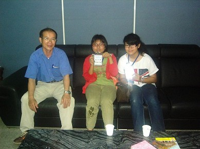
第二哩就是村長阿(大家都知道了)
大自然公司裡面大多在做塑膠，例如:三角錐等等的。無知的我們來到了這裡，就像看到救星似的，剛開始我們還對這下犁有些許的不熟悉(其實是很不熟)，村長一看到我們就知道我們是來跟他求救的，一坐下，就開始和我訴說下犁的特色，第一個就是我們最珍貴的古蹟。(古厝)
(1)柯家古厝vs林家古厝
| 柯家古厝是間三合院，裡面哩最具特色就是有九十九個們，傳說有一百個門就會有好事發生但第一百個們就是怎麼蓋的蓋不起來，所以直到現在也還直有九十九的們而已(有點可惜ㄟ)。問我現在如何，也只能說大多房子都壞了，但還是有幾間重建，裡面還是有住人拉!!但很少就是了 |
至於林家古厝哩!!則是五合院，建於民國66年座右兩間是姓顏的在住，至於中間哩!!則是姓林的，但可惜的是左邊跟中間的沒人住了。(別氣餒ˇ!!)(偷偷告訴你一個秘密喔!)其中最具特色的就是裡面住著四個兄弟，第一間原本是住宅第二間是給老大的，第三~五間則是給其他三兄弟，這就是我們最敬愛的林家古厝。 |
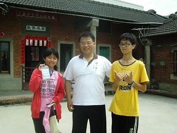 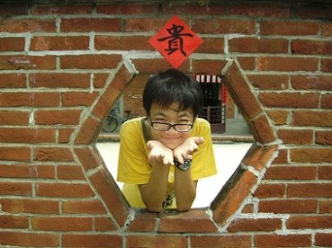
你看這豬頭啊!!擺這姿勢想把妹~~XD
村長說完了古蹟的特色後，緊接著就是當地的農業特色
(鵪鶉飼養場)
在下犁，大約有四家左右，大約有15年以上的歷史，裡面哩!!小皮蛋和鴨蛋較多
說完了嚴肅的話題後，村長就說些較為休閒的例如彩繪牆等等的，村長想讓它成為下犁的特色，想讓遊客們能來到這隨興所欲的畫出自己想畫的東西，但應為經費不夠，所以終究還是破滅了。
說道這村長順便提了下犁最大的特色就是公園啦!!大約有五個左右，其中這陣子有新建了一個
新的公園，裡面有著特別的圍牆，有許多人會認為是那墳墓(其實我們也是勒!!)但那不是啦!!那只是想表現出下犁的特色而已，舊只因為原本做決定的，所以
不能再改了，但村長還是希望以後能打掉重建。裡面五個公園裡每個公園都有它不同的特色，
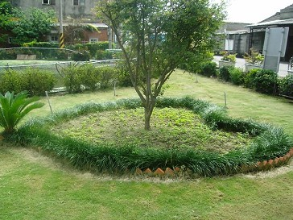
更重要的是它有著村長夫人滿滿的用心。(水)
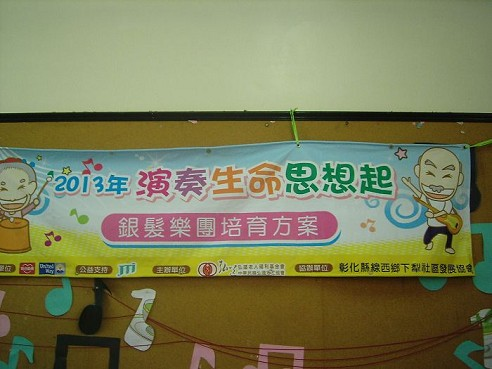
至於活動中心哩!!
就是提供許多村民們休閒的好去處，提供了老弱婦孺學習之處，(裡面有許多活動，例如書法阿、課後輔導阿等等的)@0@好好喔!) 就是俗話說的(活到老學到老)
增廣村民們的見聞
以上是我們挖到的寶......
至於第三就是我們最愛的爺爺囉!!!
(你看這是他孫子)
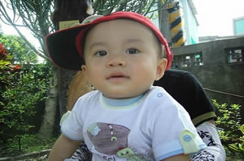
經過了這次的社區之旅，讓我了解了不少東西，更重要的是讓我明白，其實我不是那麼了解線西，雖然我住在線西而且又是土生土長的(鄉下小孩)
最後來個驚喜吧!
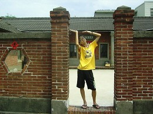 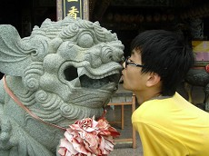 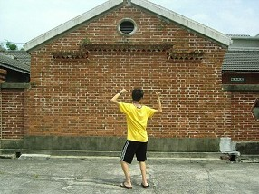
哈哈～我們豬長好口愛啊!!(但也有點變態ㄟ)
來跟他KISS一下巴(有點想吐)
P.S.好幼稚喔!!!(乖喔!!)
<--回下犁村首頁 |